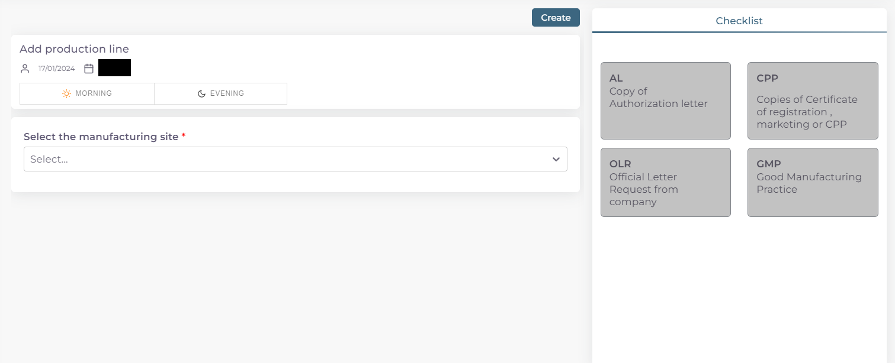

خطوات تقديم معاملة اضافة خط انتاجب لشركة دوائية
اولا: بدء معاملة جديدة واختيار نوع المعاملة:
من واجهه الحساب الرئيسية نضغط على زر new لغرض بدء معاملة جديدة:

ثم نختار نوع المعاملات المختصة بالمواقع التصنيعية:

ثم نختار نوع المعاملة وهي خط انتاج:

ثم نختار نوع المعاملة وهي اضافة خط انتاجي لشركة ادوية:
ثانيا: اختيار الموقع التصنيعي المسجل مسبقا المراد اضافة خط انتاجي له و ملئ معلومات الخط او الخطوط المضافة وبدء المعاملة:
اختيار وقت تدقيق المعاملة حسب اوقات الدوام الرسمي في الوزارة:

ملاحظة
الشفت المسائي: يكون وقت تدقيق المعاملة من ال 8 صباحا الى ال 5 مسائا
الشفت الصباحي: يكون وقت تدقيق المعاملة من 8 صباحا الى ال 2 مسائا
الشفت المسائي يكون اسرع لان وقت التدقيق اليومي اكثر
تكلفة التسجيل للشفت المسائي تكون اكثر من الصباحي
اختيار الموقع التصنيعي المراد اضافة خط انتاجي له: